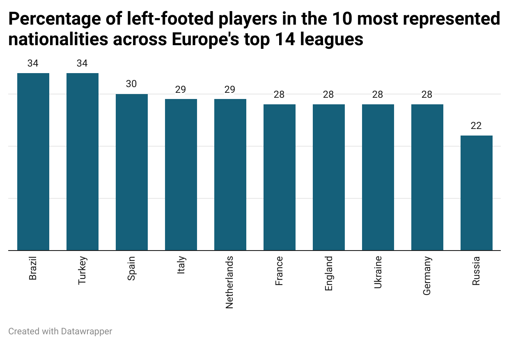
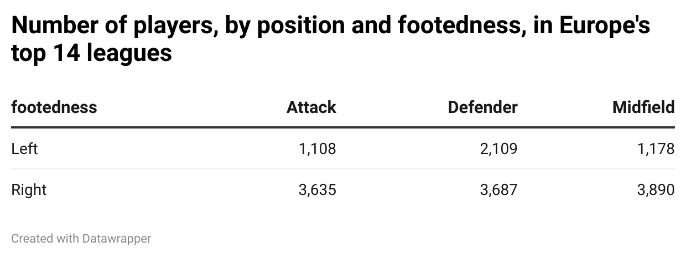
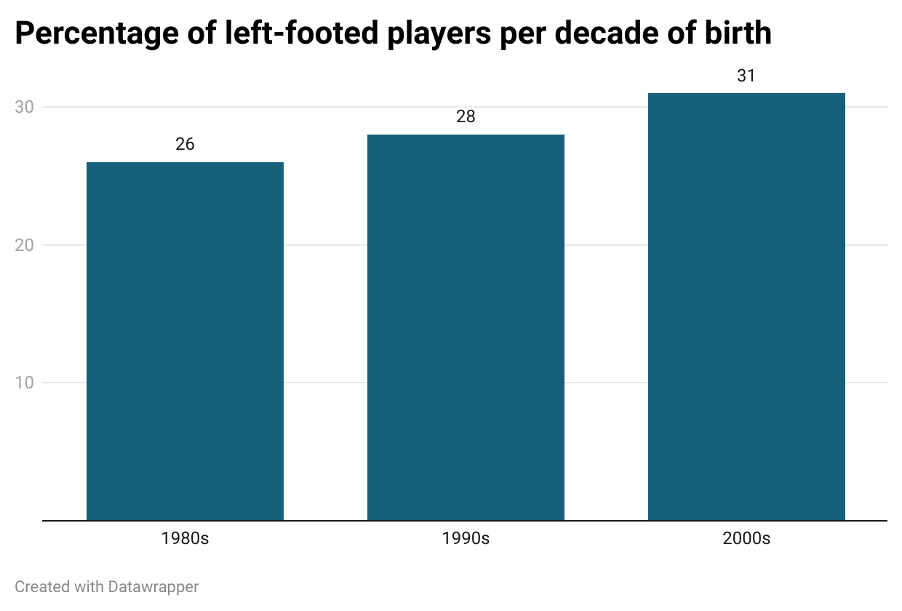

There is an old myth in soccer. That left-footed players are, almost inherently, special talents, one of a kind, whereas right-footed players, because there are so many of those, come and go.
It’s an old saying. As is often the case, it withstands the test of time because of seniority, cognitive dissonance and a penchant for adages, which, soccer, for those who know, thrives off.
Doesn’t mean it’s true though. “For a long time it was romanticized,” said Wilson Junior, a Brazilian sports journalist who has been working with soccer on broadcast for over 15 years, covering World Cups, Champions Leagues, and the Brazilian leagues, “Maradona was a left-footed player, a great lefty, and lefties were regarded as better players than righties. There’s no real physiological explanation for it.”
Still, it lives on anecdotally. A friend of mine, for example, growing up, was a promisingly talented player; she got to train with Rivellino, one of the best players of all time, and was even called up to the Brazilian national team at 15 years old. In a quick news segment about her, Rivellino listed her attributes, an eye for goal, good potential and “left-footed.”
“Because there is a general tendency in the population to be right-dominant, the lefty develops a mystique—if the guy developed an ability with his left leg, then he’s actually special with his left leg. So, a soccer player who is left footed, has a gift for the game, and tends to stand out. We have a tendency to believe that, at least.”
One would imagine, therefore, that left-footed players would accrue higher valuations in the market. If they are in fact so special by default, their monetary worth is probably significant. One would imagine…
This question led me down an investigation concerning left-footed players in the current soccer landscape. And the best way I thought to solve it, was by going after data. Eventually, I found data on over 15,000 players from 14 major European leagues—from the Premier League in England, to the Süper Lig in Turkey—with which I could determine, based on a player’s highest market value, according to transfermarkt.com, whether, left- or right footed-players were more valuable.
Average market value of left-footed players (in GBP): $3,782,968
Average market value of right-footed players (in GBP): $3,990,813
It would be a shame to end this investigation there, however, because, in this trove of numbers, there was much more information than that. So, as an aficionado of the game, I thought I’d ask the data more questions. Here are some of the answers I got:


These results weren’t surprising to me. While defenders aren’t generally seen as the most technically savvy players on the pitch, they tend to be the most specialized. Left-footed players in particular, are pushed, from an early age, towards “specialist” positions.
“It’s pretty much a physical question—the pitch has two sides. So in a situation where you are crossing at the end line, on the right side, right-footed players will cross the ball as they’re running forward. On the left side, they have to cut back before crossing to get on their right legs,” says Junior.
Pep Guardiola, for example, finds it necessary to play with left-footed players on the left side of his defense. He has been known to even convert left-footed midfielders the he lacks the personnel in defense. Further ahead in the pitch, however, the issue isn’t as pressing, because his more attacking players aren’t bound by very rigid positioning tactics.
“In the case of Guardiola, it’s a very physical and mechanical thing. A lefty will pass to the outside of the pitch with greater ease than to the inside of the pitch. It’s a mechanical thing. Same thing for a righty. And it’s natural, in any sport, for there to be a symmetry—on the right side, you’ll want a player who does that better for the right side, and the same thing for the left side.”
Guardiola’s philosophy of play serves, currently, as one of the most influential in the world. When he decides soccer will be played a certain way, many follow.

“Soccer has been professionalized, to the point where small characteristics are selected and potentialized,” Junior says, which doesn’t stray too far from what happens in football, “In the NFL, a player’s biotype defines their position. You have a good running back who is smaller, because he’ll be able to dodge blocks more easily; it’s important for a quarterback to be taller, because he’ll throw more accurately from the top; a faster player will improve the game on the wings.”
As soccer evolves, players are chosen, from an early age, to act out specific positions. And with the demand for specialized players to fill specialized positions, it’s only natural that more and more left-footed players are given a chance to shine.
“Looking at the left side of the pitch, if all things are equal, it’s very probable that a lefty will have an advantage over a righty. It doesn’t make much of a difference for a center-forward though.”
All in all, soccer trends towards specialization and the professionalization of players at younger ages; players come out faster from academies, more polished characteristics and more prepared to take on specific roles in the professional game. It can also mean, however, that players are losing a greater understanding over the game—forced to specialize themselves early, to become masters of their roles, the jack of all trades may become rarer.
As far as left-footed players are concerned, the current trend is to incentivize their place in the game. Perhaps in 20 years, the old adages won’t ring as true.